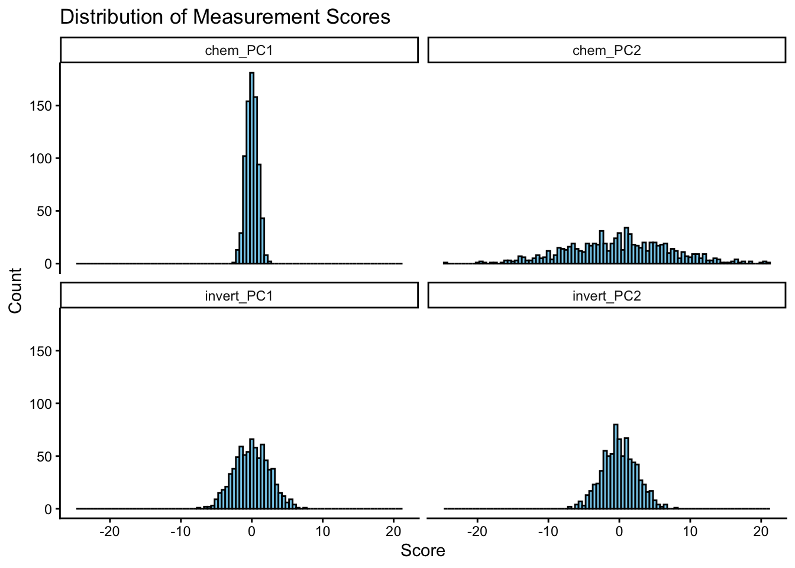
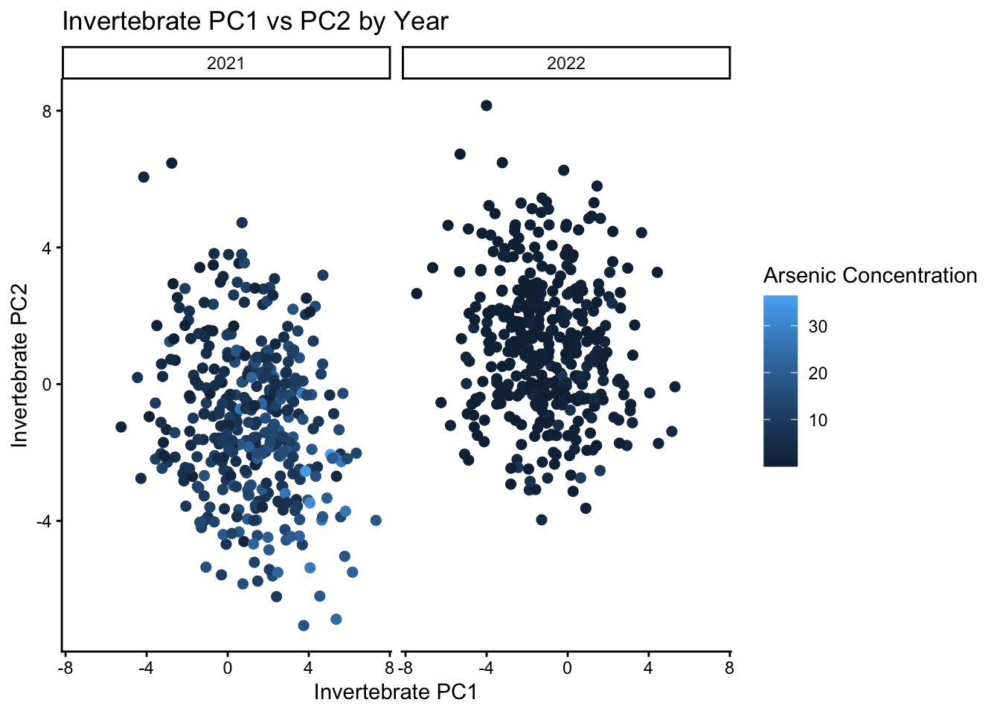
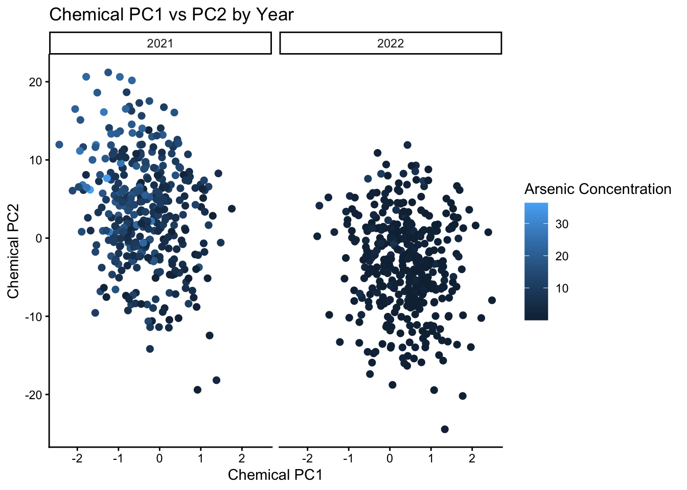

# 1. Ziadie Diebel - 20463388
# 2. Name - Queen's Student Number
# 3. Name - Queen's Student Number
# 4. Name - Queen's Student Number
# 5. Name - Queen's Student NumberBIOL343 Coding Challenge 3
BIOL343 Coding Challenge 3
Group Members
Scenario chosen (hospital or lakes; see the instructions): Lakes Scenario was chosen
DO THIS FIRST
Copy and paste this into your R Console to start positpal, but replace FILENAME.Rmd with the name you are going to use for the .R or .Rmd file you are going to upload (rename the template first, e.g. Group_#_CC3.Rmd, and use that exact name). Do not include it as a code chunk.
install.packages("remotes")
remotes::install_url("https://quantitative.bio/downloads/positpal.tar.gz", upgrade = "never")
positpal::start("Group_3_CC3.Rmd")Before you run it: open the project folder for this challenge in Positron (File → Open Folder…) so that it is your working directory, save this file in that folder under the name you will upload, and check that autosave is on (File → Auto Save). The first time you use positpal on a computer, start() will ask you to run positpal::accept_eula() once; do that, then run the start() line again. After a few minutes of work, check in the Explorer pane that the .capture/snaps folder inside your project is filling up with files. If it is not, or if start() refuses to record, run positpal::doctor("FILENAME.Rmd") and bring the output to tutorial or office hours. Run the start() line again at the start of every session you spend on this file.
Part 2 — Join the files
7. Full join by ID and Date
Combine the three objects into one called all_data with full_join() (Chapter 10, Join Datasets), matching rows that have the same ID and the same Date: by = c("ID", "Date"). Two joins are needed. Check the dimensions.
# Initially combining data 1 and data2
data1data2=full_join(data1, data2, by=c("ID", "Date"))
head(data1data2)# A tibble: 6 × 5
ID Date Conc invert_PC1 invert_PC2
<dbl> <date> <dbl> <dbl> <dbl>
1 1291543 2022-05-03 3.13 2.92 -1.80
2 4972386 2021-05-27 12.8 1.84 -1.42
3 9934712 2022-10-15 0.211 0.504 2.52
4 2711078 2022-05-06 0.439 -1.48 -0.021
5 8171692 2022-01-20 0.327 -0.129 -0.323
6 7859592 2021-10-24 5.87 0.406 -2.26 dim(data1data2)[1] 800 5# combining the above with data3
all_data=full_join(data1data2, data3, by=c("ID", "Date"))
head(all_data)# A tibble: 6 × 7
ID Date Conc invert_PC1 invert_PC2 chem_PC1 chem_PC2
<dbl> <date> <dbl> <dbl> <dbl> <dbl> <dbl>
1 1291543 2022-05-03 3.13 2.92 -1.80 -0.974 5.38
2 4972386 2021-05-27 12.8 1.84 -1.42 -0.615 4.26
3 9934712 2022-10-15 0.211 0.504 2.52 -0.168 -7.54
4 2711078 2022-05-06 0.439 -1.48 -0.021 0.492 0.063
5 8171692 2022-01-20 0.327 -0.129 -0.323 0.043 0.969
6 7859592 2021-10-24 5.87 0.406 -2.26 -0.135 6.78 dim(all_data)[1] 800 78. Compare the join verbs
Using only data1 and data2, report the number of rows returned by inner_join(), left_join(), right_join() and full_join() (all by = c("ID", "Date")). nrow() is enough; do not print the tables.
# inner
nrow(inner_join(data1, data2, by=c("ID", "Date"))) # Output: 782[1] 782# left
nrow(left_join(data1, data2, by=c("ID", "Date"))) # Output: 794[1] 794# right
nrow(right_join(data1, data2, by=c("ID", "Date"))) # Output: 788[1] 788# full
nrow(full_join(data1, data2, by=c("ID", "Date"))) # Output: 800[1] 800Question 3: The four numbers differ. Explain which rows each verb keeps, and what that tells you about samples that are in one file but not the other.
Answer: inner_join() outputs 782 meaning it only keeps the 782 rows in both files and doesn’t include rows found only in the data1 or only in the data2 file. left_join() outputs 794 meaning it keeps only all the 794 rows from data1, meaning data1 has 12 more rows that differ from data2 (794-788). right_join() outputs 788 meaning it keeps only all the 788 rows from data2, meaning data2 has 6 more rows that differ from data1 (788-782). full_join() outputs 800 the highest number from all the ouputs as this function keeps everything from both data1 and data2 files (To check this the sum of the rows shared between both data sets and the rows only one data set has should sum to 800. (e.g. 782 + 12 + 6 = 800)).
Part 3 — Dates, summaries and ordering
9. Add year and month
Add a Year column and a Month column to all_data with mutate() and the lubridate functions year() and month() (Chapter 10, Extracting Components).
all_data= all_data |>
mutate(
Year=year(Date),
Month=month(Date)
)
# Preview to make sure the new Year & Date columns show up
head(all_data)# A tibble: 6 × 9
ID Date Conc invert_PC1 invert_PC2 chem_PC1 chem_PC2 Year Month
<dbl> <date> <dbl> <dbl> <dbl> <dbl> <dbl> <dbl> <dbl>
1 1291543 2022-05-03 3.13 2.92 -1.80 -0.974 5.38 2022 5
2 4972386 2021-05-27 12.8 1.84 -1.42 -0.615 4.26 2021 5
3 9934712 2022-10-15 0.211 0.504 2.52 -0.168 -7.54 2022 10
4 2711078 2022-05-06 0.439 -1.48 -0.021 0.492 0.063 2022 5
5 8171692 2022-01-20 0.327 -0.129 -0.323 0.043 0.969 2022 1
6 7859592 2021-10-24 5.87 0.406 -2.26 -0.135 6.78 2021 1010. Summarise concentration by year
Use group_by() and summarise() (Chapter 10, summarise() + group_by()) to calculate the mean and standard deviation of Conc for each Year. Remember na.rm = TRUE (Chapter 10, NA and na.rm()). Save the result as year_summary and print it.
year_summary = all_data|>
group_by(Year) |>
summarise(
mean_conc=mean(Conc, na.rm=TRUE),
sd_conc=sd(Conc, na.rm=TRUE)
)
# Print out the results
year_summary# A tibble: 2 × 3
Year mean_conc sd_conc
<dbl> <dbl> <dbl>
1 2021 10.2 6.14
2 2022 0.964 1.46Question 4: Does concentration differ between the two years? Answer in one or two sentences from the table.
Answer: Yes the concentration differs between the years, with a mean of 10.2 (sd=6.14) for 2021 and a mean of 0.964 (sd = 1.46) for 2022. The 2021 data also shows much higher variability compared to the 2022 data.
11. The five highest concentrations
Use arrange() with desc() (Chapter 10, arrange() Rows) and select() (Chapter 10, select() Columns) to show the five samples with the highest Conc, with only the ID, Year and Conc columns. Pipe the steps together with %>% (Chapter 10, %>%).
top_five= all_data |>
arrange(desc(Conc)) |>
select(ID, Year, Conc) |>
head(5)
# Print the results
top_five# A tibble: 5 × 3
ID Year Conc
<dbl> <dbl> <dbl>
1 9050729 2021 36.4
2 1829307 2021 34.9
3 1290775 2021 31.8
4 6739807 2021 27.4
5 9456994 2021 27.2Part 4 — Reshape
12. Wide to long
Starting from all_data, the four measurement columns you renamed in Section 5 (e.g. micro_PC1, micro_PC2, urine_PC1, urine_PC2) are in wide format. Use pivot_longer() (Chapter 10, pivot_longer) on all_data to stack those four columns into two, Measure (which column the value came from) and Score (the value). Save the result as long_data and check it with head() and dim().
long_data= all_data |>
pivot_longer(
cols=c(invert_PC1, invert_PC2, chem_PC1, chem_PC2),
names_to="Measure",
values_to="Score"
)
# Inspect long_data
head(long_data)# A tibble: 6 × 7
ID Date Conc Year Month Measure Score
<dbl> <date> <dbl> <dbl> <dbl> <chr> <dbl>
1 1291543 2022-05-03 3.13 2022 5 invert_PC1 2.92
2 1291543 2022-05-03 3.13 2022 5 invert_PC2 -1.80
3 1291543 2022-05-03 3.13 2022 5 chem_PC1 -0.974
4 1291543 2022-05-03 3.13 2022 5 chem_PC2 5.38
5 4972386 2021-05-27 12.8 2021 5 invert_PC1 1.84
6 4972386 2021-05-27 12.8 2021 5 invert_PC2 -1.42 dim(long_data)[1] 3200 7Now use long_data to draw histograms of Score with facet_wrap() so that each Measure gets its own panel (Chapter 4 and Chapter 7). Choose a sensible binwidth, add axis labels and a title, and use theme_classic().
# Was getting an error and the Chatbot advised the Score might be a character instead of a numerical value.
# Used mutate to convert the Score to a numerical value
long_data <- long_data |>
mutate(Score = as.numeric(Score))
ggplot(data=long_data, aes(x=Score)) +
geom_histogram(binwidth=0.5, colour="black", fill="skyblue") +
facet_wrap(~Measure) +
labs(
title="Distribution of Measurement Scores",
x = "Score",
y = "Count"
) +
theme_classic()Warning: Removed 63 rows containing non-finite outside the scale range
(`stat_bin()`).
13. Long to wide
Each ID was sampled once in each year. Starting from all_data, select() only ID, Year and Conc, then use pivot_wider() (Chapter 10, pivot_wider) so that there is one row per ID with a column for each year. Save it as wide_conc. Then add a Change column equal to the second year minus the first (column names that start with a digit must be wrapped in back-ticks, e.g. `2022`), and count how many IDs increased.
# Create wide_conc dataset
wide_conc= all_data |>
select(ID, Year, Conc) |>
pivot_wider(
names_from = Year,
values_from = Conc
) |>
mutate(Change = `2022` - `2021`)
# Count IDs with an increase (Change > 0)
sum(wide_conc$Change > 0, na.rm=TRUE)[1] 19# Count IDs with NA for Change
sum(is.na(wide_conc$Change))[1] 6Question 5: How many IDs have a higher concentration in the second year than in the first, and how many have NA for the change? Why are there NAs?
Answer: 19 IDs have a higher concentration in the second year than in the first. 6 IDs have NA for the change column. They are likely NAs because calculating the change requires a concentration value for both years for a given ID. If a cell is missing a value for one of the years or both subtracting the one year from the other will lead to the resulting NAs (e.g. 6-NA = NA or NA-10 = NA or NA-NA = NA).
Part 5 — Test the hypothesis visually
14. PC1 against PC2
Use ggplot() to plot PC1 on the x-axis and PC2 on the y-axis for one of the two measurement sets, with colour = Conc so that concentration is shown by colour, and facet_wrap() by Year. Include theme_classic(), axis labels and a title (Chapter 4 and Chapter 7). Repeat for the other measurement set if it helps you answer Question 6. A few points will be grey: those are samples with no concentration value (Conc is NA because they were not in Dataset1.csv), so no colour can be assigned. Ignore them when you answer Question 6, or drop them first with filter(!is.na(Conc)).
# Filter out NAs and plot PC1 vs PC2 faceted by Year for the invert measurements.
all_data |>
filter(!is.na(Conc)) |>
ggplot(aes(x=invert_PC1, y=invert_PC2, colour=Conc)) +
facet_wrap(~Year) +
geom_point(size=2) +
labs(
title = "Invertebrate PC1 vs PC2 by Year",
x = "Invertebrate PC1",
y = "Invertebrate PC2",
colour = "Arsenic Concentration"
) +
theme_classic()Warning: Removed 24 rows containing missing values or values outside the scale range
(`geom_point()`).
# Repeat for the chemical measurements.
all_data |>
filter(!is.na(Conc)) |>
ggplot(aes(x = chem_PC1, y=chem_PC2, colour=Conc)) +
facet_wrap(~ Year) +
geom_point(size = 2) +
labs(
title = "Chemical PC1 vs PC2 by Year",
x = "Chemical PC1",
y = "Chemical PC2",
colour = "Arsenic Concentration"
) +
theme_classic()Warning: Removed 19 rows containing missing values or values outside the scale range
(`geom_point()`).
Question 6: What do the data say about the hypothesis in your scenario (patients with similar viral loads have similar gut microbes and urine metabolites, or lakes with similar arsenic levels have similar invertebrate communities and water chemistry)? Answer in a short paragraph from visual inspection of your figures. For now, assume that any strong pattern is statistically robust; later we will learn to test this with models.
Answer: Looking at the figures created it appears that the data does mainly support the hypothesis (mainly focusing on 2021 that provided more of a range and easily identifiable differences in concentration levels). If lakes with similar arsenic levels had similar invertebrate communities and water chemistry, we would expect to see distinct colour clustering or a smooth gradient across the graph (e.g., higher concentration points grouping together on one side and lower concentrations on the other, going from light blue to dark blue or the other way around). When looking at the graphs dark blue points representing low concentrations and light blue points representing high concentrations seem to be seperated going from darker to lighter or the inverse. We mainly see this pattern for 2021 and for 2022 the concentration appears to be the almost the exact same throughout.
2021 Invertebrate Plot: High arsenic concentrations appear more frequently in the right bottom side of the graph where PC1 values are higher (in the positive range) and PC2 values are lower (in the negative range). Low arsenic concentrations appear more frequently in the left top side of the graph where PC1 values are lower (in the neative range) and PC2 values are higher (in the positive range). The gradient appears to move from bottom right to top left of the graph (moving from high to low concentrations, light to dark blue).
2022 Invertebrate Plot: A significant change compared to the concentrations in 2021 can be observed when looking at the two plots. The majority of the points appear to cluster in the middle of the graph and seem to all be around the same colour gradient representing low arsenic concentrations. This shows that the arsenic concentration levels have decreased since 2021.
2021 Chemical Plot: High arsenic concentrations appear more frequently in the left top side of the graph where PC1 values are lower (in the negative range) and PC2 values are higher (in the positive range). Low arsenic concetrations appear more frequently in the right bottom side of the grapg where PC1 values are higher (in the positive range) and PC2 values are lower (in the negative range). The gradienti appear to move from the top left to the bottom right of the graph (moving from high to low concentrations, light to dark blue)
2022 Chemical Plot: A significant change compared to the concentrations in 2021 can be observed when looking the the two plots. The majority of the points appear to cluster in the middle of the graph with the exception of the few outliers. The points in 2022 also all appear to be around the same colour (dark blue) meaning they are all about the same concentration (low). This shows that the arsenic concetration levels have decreased significantly since 2021.
Question 7: Read the scenario you did not choose. What, if anything, would you have done differently in the code? What does this tell you about coding as a transferable skill?
Answer: Reading the hospital scenario some things I would have changed in the code are the naming for PC1 & PC2 from both data2 and data3 as they represent different values/ components for the hospital scenario. As well as the labelling for the graphs and anything else to represent that situation. Overall though these 2 different scenarios show how easily transferable coding can be. One code that you used for a certain experiment might be easily able to be used for another similar experiment.
For example, you are measuring concentrations of water vs salinity in marine organisms. This process might be similar enough to running the same with mammals and might also be measured using the exact same components. Therefore you might be able to use the one methods code and transfer it into the same experiment run on mammals. This type of coding helps save time if you can at least use the skeleton of a code similar to what you need and then specify it to your specific experiment.
DO THIS LAST
When your document is finished and knitted, copy and paste this into the R Console to stop positpal and create your coding log. Do not include it as a code chunk.
positpal::stop_capture()
positpal::export_capture()export_capture() prints the name and location of the my-capture-YYYYMMDD-HHMMSS.zip it creates beside this file. Each group member uploads their own .zip to the “CC3 — Coding Log (individual)” dropbox on OnQ; the group’s .Rmd and knitted .html go to your section’s TUT02-CC3 or TUT03-CC3 folder. Submissions without the log are incomplete. If export_capture() fails, zip the .capture folder yourself and upload that instead.